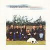

Celtic Lyrics Corner > Artists & Groups > Capercaillie > Nàdurra > Mo Chailin Dileas Donn
|  | Mo Chailin Dileas Donn |
| Credits : | Traditional; arranged by Capercaillie |
| Appears On : | Nàdurra ; Live In Concert |
| Language : | Gàidhlig (Scottish Gaelic) |
| Other Versions : | " Mo Chailin Dìleas Donn " on Cliar's album Cliar |
| Lyrics : | English Translation : |
| Gu ma slàn a chì mi | Healthy do I see you |
| Mo chailin dìleas donn | My faithful brown-haired lass |
| Bean a chuailein réidh air | Damsel of the well-groomed tresses |
| An deas a dh'éireadh fonn | Singer of the songs |
| 'Si cainnt do bheòil bu bhinne leam | The words from your mouth so sweet for me |
| An uair bhiodh m'inntinn trom | When my mind was melancholy |
| 'S tu thogadh suas mo chridh' | And you uplifted my heart |
| 'Nuair bhiodh tu bruidheann riùm | Whenever you spoke to me |
| Gur muladach a tà mi | Despondent I am |
| 'S mi nochd air aird a' chuain | Tonight on the high seas |
| 'S neo-shunndach mo chadal dhomh | And uneasy my sleep |
| 'S do chaidreamh fada bhuam | Your companionship far from me |
| Gur tric mi ort a smaointeach' | Often do I think of you |
| As t'aogais tha mi truagh | As your image leaves me sad |
| 'Is mar a dean mi d' fhaotainn | And if I can not have you |
| Cha bhi mo shaoghal buan | My world will not last |
| Tacan mu'n do sheòl sinn | A short time before we sailed |
| Is ann a thòisich càch | That's when others began |
| Ri innse do mo chruinneag-sa | To tell you, my own darling |
| Nach tillin-sa gu brath | That I would not return |
| Na cuireadh sud ort gruaimean | Do not let that disturb you |
| A luaidh, ma bhios mi slàn | My dear, if I am well |
| Cha chùm dad idir 'uat mi | Nothing will ever keep me from you |
| Ach saighead chruaidh a'bhàis | But the cold arrow of death |